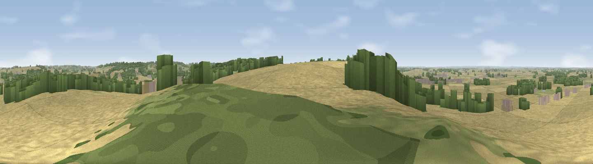

Viewpoint near Great Gonerby
#10514 in England · top 6% of its area beats it · near Great Gonerby · access?Where it is
The exact computed spot (SK 89925 39525). Click the marker for map links.
Public access: no public right of way or access land is recorded at this exact spot — it may be on private land. Computed from Natural England's CRoW access layer and OpenStreetMap rights of way — not the legal definitive map. Always verify locally.
The view, rendered

A 360° render of this exact spot computed from the terrain model, tree cover and land cover — summer colours, afternoon light, calibrated against photographs of famous viewpoints. Real trees, hedges and buildings will differ in detail.
The panorama
Grey silhouette: terrain skyline in each direction (720 bearings, Earth curvature and refraction included). Dashed green: skyline with trees (+15 m) and buildings (+8 m) as obstacles. Blue strip: how far the ground is visible on each bearing.
Where the view opens
Wedge length = distance to the farthest visible ground on that bearing (vegetation-aware). Rings at 10, 25 and 50 km.
What fills the view
48% cropland · 29% grassland · 17% woodland · 6% built-up
Angular shares of the visible panorama (visual magnitude), not map area. Landscape diversity 0.52 (0–1 Shannon).
Key numbers
More beautiful places nearby
The staircase of upgrades: each row has a higher view potential than everything closer. Driving times are estimates from straight-line distance, calibrated against real road routing — check an actual route before setting out.
| Place | Direction | Drive | Score |
|---|---|---|---|
| Viewpoint near Belvoir | SW · 10 km | ~19 min | 70.8 |
| Broombriggs Hill | WSW · 46 km | ~66 min | 74.4 |
| Viewpoint near Woodhouse Eaves | WSW · 46 km | ~66 min | 77.7 |
| Viewpoint near Mow Cop | W · 105 km | ~130 min | 78.9 |
| Viewpoint near Mow Cop | W · 105 km | ~130 min | 80.2 |
| Viewpoint near Little Wenlock | WSW · 130 km | ~154 min | 84.2 |
| The Wrekin | WSW · 131 km | ~155 min | 85.0 |
| Viewpoint near Little Wenlock | WSW · 131 km | ~155 min | 86.6 |
52.94559, -0.66318 · source: screening · position refined by local search. Computed location — check access rights before visiting.